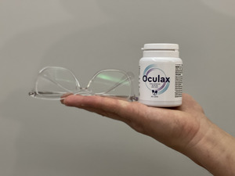
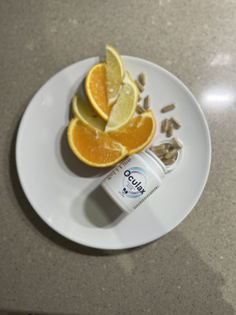

.
A szemüvegek ára emelkedik. Mindez a gyártók monopóliuma miatt.
Ez a történet jól mutatja, hogy a fiatal tehetségeket manapság gyakran elnyomják. Gede Ádám végzős középiskolásként részt akart venni egy fiatal tudósok számára szervezett országos versenyen, és tanárának támogatását remélte. Megmutatta neki egy saját találmányának receptjét, amely néhány hét alatt javította a látását. De kigúnyolták, és azt mondták neki: "Ez egy furcsa dolog, semmire sem jó. Ne foglalkozz ostobaságokkal!" A tanárától nem kapott támogatást, csak megalázták az egész osztály előtt.
Szerencsére a fiú a saját kezébe vette a dolgokat. Ő maga finanszírozta a versenyen való részvételét, és elutazott a fővárosba, ahol a fiatal feltalálók bemutathatták felfedezéseiket. Ott találkozott egy befektetővel, aki támogatta őt a képletén alapuló készítmény továbbfejlesztésében. Ma az szabadalom értéke nem kevesebb, mint 7 milliárd dollár! A fiatal feltaláló azonban azt akarta, hogy ez a forradalmi felfedezés ne csak a gazdagok számára legyen elérhető, hanem bárki számára, aki használni szeretné. Gede Ádám erőfeszítéseinek köszönhetően az most már bárki számára könnyen és olcsón megvásárolható.
Ádám tanára továbbra sem hajlandó nyilatkozni az esetről. Sikerült azonban felvenni a kapcsolatot egy tanárral, aki az egyik kollégája. Kérte, hogy a neve ne kerüljön fel a honlapunkra. Elmondta, hogy a tanárt, aki nem értékelte a tehetség projektjét, az ügy nyilvánosságra kerülése után ki akarták rúgni, de végül meggondolták magukat. És maga Gede Ádám volt az, aki ezt kérte, pedig pont őt sértették meg!
Sikerült telefonon kapcsolatba lépnünk a fiatal zsenivel. Amikor megkérdeztük, miért bocsátott meg egy tanárnak, aki kinevette forradalmi találmányát, és mindenki előtt megalázta, nyugodtan válaszolt:
"Az emberek követnek el hibákat. Mindig érdemes adni nekik egy második esélyt. Ezt a nagyapámtól tanultam, akinek feltaláltam az formulát. Nagyon szerettem volna segíteni neki, hogy visszanyerje a látását, és hittem, hogy a találmányom képes erre. Semmi sem tudta elűzni a gondolatot. Boldog vagyok, hogy találkoztam valakivel, aki hisz bennem. Ez nemcsak nagyapámnak segített, hanem több ezer más embernek is, akiknek már nem volt reményük arra, hogy visszanyerjék a látásukat.
Most a legnagyobb technológiai cégek versengenek Ádámért, és szeretnék finanszírozni következő projektjeit. A legfontosabb számára azonban a tudományos képzés; először azt szeretné befejezni, és utána karriert építeni. Nehéz elképzelni, hogy ez a fiatal zseni még milyen találmányokkal fogja meglepni a világot!
A fiatal tudós terméke egy héten belül megvásárolható volt Magyarországon. Az érdeklődés azonban olyan nagy volt, hogy az első készletek néhány nap alatt szinte teljesen elfogytak. Gede Ádám készítményének hamisítványai azonnal tömegesen kezdtek megjelenni a piacon. Miért ilyen nagy az érdeklődés a készítmény iránt?
Kérdésünkre Petz Miklós, a szemészet, azaz a látószervek betegségeivel foglalkozó tudományág szakértője válaszolt.
"Azoknak, akiknek a mindennapi életben látásproblémákkal kellett szembenézniük, eddig három választási lehetőségük volt. Az első: szemüveget viseltek, amely lehetővé tette számukra, hogy jobban lássanak. De sajnos "lustává" teszik a szemet, ami súlyosbítja a problémát. Ez azt jelenti, hogy évente legalább egyszer le kell cserélnie szemüvegét erősebbre. Kinek van erre szüksége? A szemüvegkeretek árai szörnyűek. Ráadásul a lencse egyszerű cseréje nem megoldás. Ez olyan, mintha fogyni akarna, de edzés helyett nagyobb nadrágot venne. Ez egy ideig talán elég lesz, de hamarosan kiderül, hogy ismét nagyobb nadrágra lesz szükségünk. Tehát elköltünk egy nagy halom pénzt, és ez nem oldja meg a valódi problémánkat. Ráadásul ez csak egyre rosszabb lesz! Sajnos a legtöbb ember ezt nem veszi észre időben. Mire rájönnek, hogy a problémájuk más megközelítést igényel, gyakran már túl késő megmenteni a szemüket.
A második lehetőség a kontaktlencse. Végzetes hibájuk ugyanaz, mint a szemüvegek esetében. Higiéniai szempontból is megkérdőjelezhető megoldás a kontaktlencse. Minden nap kis lemezkéket kell közvetlenül a szemgolyóra helyeznie az ujjaival... Kevesen tudják, hogy amikor kontaktlencsét viselünk, körülbelül 5 millió baktérium kerül a szemünkbe. Ezért nem meglepő, hogy a lencseviselők gyakran panaszkodnak szem- vagy szemkörnyéki fertőzésekre. Az időben meghozott intézkedések pedig nem mindig védik meg a súlyos következményektől. A baktériumok behatolhatnak a szemgolyó hátsó részébe, és a látóidegek gyulladásához vezethetnek. És ez katasztrófa, hiszen az ember olyan hirtelen veszíti el a látását, ahogy kialszanak a fények.
A harmadik lehetőség, az úgynevezett lézeres látásjavítás az utóbbi időben nagyon divatossá vált. Ez az eljárás a szaruhártya bizonyos területeinek lézerrel történő kiégetését jelenti. Ez a súlyos szemégés nem csak veszélyes, de az eljárást néhány havonta meg kell ismételni. Azonban a következőt szeretném mondani... Gondoljon bele, hány szemész szakemberrel találkozott már, aki szemüveget visel? Miért viselik, amikor lézeres műtéttel is segíthettek volna a szemükön? Érdekes kérdés, nem igaz? Nem ismerek egyetlen szakembert sem, aki átesett volna egy ilyen eljáráson, annak ellenére, hogy ajánlják az embereknek...
Ugyanakkor a Gede Ádám által kifejlesztett nak nincs káros hatása... Ennek a készítménynek az elve nem tartalmaz olyan nem természetes módszereket, mint a szemen lévő területek kiégetése vagy egy segítő "mankó" szemüveg vagy lencse formájában. Gede Ádám olyan formulát hozott létre, amely belülről működik, átkonfigurálva a testet, hogy segítsen helyreállítani azokat a folyamatokat, amelyek révén a látás javul. Az antioxidáns tulajdonságokkal rendelkező vitaminokat és nyomelemeket tartalmaz, amelyek nélkülözhetetlenek a szem védelmi rendszerének működéséhez az oxidatív károsodások, a napfény kék spektrumának káros sugarai ellen.
A gyógyszertárainkban kapható számos készítménytől eltérően az hatékonyságának legfőbb titka a gondosan kiválasztott összetevőkben rejlik. A fiatal tudós nem egyszerűen összekeverte azokat az anyagokat, amelyekről tudta, hogy jót tesznek a látásnak. Részletesen tanulmányozta, hogyan hatnak egymásra, és milyen hatást fejtenek ki a sejtek szintjén. Ez lehetővé teszi, hogy az természetes módon serkentse a vérkeringést a szem ereiben, a szemizmokban és a retinában, és nem invazív módon regenerálja a szemsejteket. Már 21 nappal az kúra megkezdése után észrevehetőek a látásjavulás jelei, valamint a rövidlátás, a távollátás, az asztigmatizmus és más problémák tüneteinek megszűnése. És a teljes kúra (2 hónap) elvégzése után az illető elfelejtheti, hogy valaha is voltak látásproblémái!"
Petz úr csupán arra szeretné figyelmeztetni a potenciális vásárlókat, hogy legyenek óvatosak, nehogy véletlenül hamisítványt vásároljanak az interneten. Az nagy népszerűségének köszönhetően számos hamisított termék jelent meg. Ezek a kapszulák pontosan ugyanúgy néznek ki, mint az , de összetételük teljesen más.
Ezért szeretnénk olvasóink figyelmébe ajánlani egy linket, ahol garantáltan megvásárolhatják az eredeti, Gede Ádám által kifejlesztett ot. Érdemes megjegyezni, hogy ezen az oldalon a fiatal feltaláló által a hazájában élő felhasználóknak nyújtott 50%-os kedvezményt is igénybe veheti.
A szemüvegek ára emelkedik. Mindez a gyártók monopóliuma miatt.
Étrend-kiegészítők a látás javítására. Mit javasolnak a szakértők?

Örökletes glaukóma? Nem kell, hogy így legyen!
Ezek a lencsék többe kerülnek, mint egy középkategóriás autó.
Progresszív lencsék: érvek mellette és ellene
5 dolog, amit a szemészek nem mondanak el a pácienseiknek

Úgy döntöttem, hogy lézeres látásjavításon veszek részt. Ma nem lát semmit.
Tükröződésmentes lencse - tényleg megéri?

Megtekintés >>
Megjegyzések
A Különleges ajánlat érvényességének határideje
Mária
Rögtön látszik rajta, hogy értelmes, megfontolt ember. Mindig is mondtam, hogy a fiataljaink nagyon okosak!
Évike
Használta valamelyikőtök ezt az ot? Ha igen, ajánlanák?
Gabi
Csatlakoznék a kérdéshez. Ahogy olvastam a cikket, rögtön arra gondoltam, hogy ez a nagymamámnak is megfelelhet.
Milán
Két hete használom, és le vagyok nyűgözve. Korábban, ha el akartam olvasni egy termék összetételét a csomagoláson, messzire, karnyújtásnyira kellett tartanom. De most már gond nélkül tudok könyveket és újságokat olvasni. Napról napra jobb lesz. Őszintén ajánlom, megéri.

Alíz
Sajnos a biológiai tanulmányaim alatt sokat romlott a látásom, mert - tudják - sokat kell olvasni, gyakran éjszaka is... És mire erre rájöttem, a bal szemem már 5, a jobb szemem 4-5 volt, és mindkét szememben kialakult asztigmatizmus. Szörnyű. Nem tudtam medencébe menni, mert nem láttam semmit, és allergiás vagyok a kontaktlencsékre. Azt gondoltam: teljesen megvakulok, mielőtt befejezném a tanulmányaimat, és soha nem fogom megtapasztalni az élet örömeit. De szerencsére megtaláltam ezt a weboldalt az -szal. Amikor a szobatársam (szintén diák) látta, hogy szedem ezeket a kapszulákat, kinevetett, és nem hitte el, hogy ez bármilyen eredményt hozhat. De amikor elkezdtem szemüveg nélkül járni, lenyűgözte.
Magda
Ez szuper készítmény, anyukámnak adtam, bár azt hitte, hogy tökéletesen lát. De aztán nem tudta a megfelelő számot tárcsázni a telefonon, mert nem látta a számokat... Mondtam neki egyszer: "Anya, egész életedben azt akarod magyarázni Bori néninek vagy Ricsi bácsinak, hogy miért hívod őket folyton véletlenül?" Ez rendben van, de kipróbálhatsz valami mást is." Meggyőztem, amikor elmondtam neki, hogy ehhez nem kell szemüveget viselnie, csak a kapszulákat kell bevennie. Először ellenállt, de aztán megköszönte :)
Szabina
Napközben jól látok, de amikor besötétedik, végem van. Még vezetni sem tudok sötétben. Segíthetnek ezek a kapszulák?
Atti
Szabina, én is ugyanebben a helyzetben voltam. Hirtelen minden elhomályosult, nem láttam semmit a sötétben. Azt hittem, hogy ez csak idővel jön, és semmit sem tehetek ellene. Az szedésének harmadik hete után azonban a dolgok kezdtek megváltozni. A kapszulák segítettek a rövidlátásomon is, mindkét szemem -11 dioptriás volt... És most, hogy naponta néhányszor beveszem a kapszulákat, sokkal tisztábban látok. Hihetetlen megkönnyebbülés, most már nem kell megkérdeznem senkitől, hogy mennyibe kerülnek az élelmiszerek a boltban.
Teréz
Boldog lennék, ha a fiam olyan lenne, mint ez a fiú. Hihetetlenül tehetséges, csak borzasztóan lusta. Egész nap a számítógépen játszik... Jó tudni, hogy vannak fiatalok, akik hajlandóak tenni valamit az emberekért.
Melinda
Errrr, én is láttam már olyan tanárokat, akik elbizonytalanítják a diákokat azzal, hogy lebeszélik őket bármiről, így nem lepődtem meg, hogy ez történt ezzel a sráccal. Ha a felnőttek ilyen példát mutatnak, mit várunk a gyerekektől? Apám többet tanított nekem matematikából és történelemből, mint az iskolában. Boldog vagyok, hogy volt egy ilyen ember az életemben.
András
Nos, ugyanúgy van az iskolában, mint az életben: a tanár is ember, és az emberek különbözőek. De nem akarok erről beszélni. Tudja valaki, hogy ezek a kapszulák működnek-e megelőzésként? Örökletes hajlamom van a szürkehályogra, és nagyon félek, hogy ki fog alakulni. Segít az ebben?
Margit
@András, igen, mert ezek a kapszulák tartalmazzák azokat a jótékony anyagokat, amelyek a szervezetből hiányoznak a normális látáshoz. A kapszulák szedésével nem engedi, hogy problémák alakuljanak ki. A sok számítógépes munka miatt száraz szem szindrómám van (tudom, hogy ez nem olyan súlyos, mint a szürkehályog, de akkor is), és a látásom az évek során romlott. De hála az nak, újra remekül látok. Tehát azt hiszem, önnek is megfelel.

Károly
@András, örökletes glaukómám van. Minden nagyszülőmnél elvégezték a műtétet, és édesanyámat is minden évben megvizsgálják emiatt. De mivel mindannyian elvégeztük az kúrát, most nincs látási problémánk. Édesanyám specialistája azt mondta, hogy soha életében nem látott még ilyen rövid idő alatt ilyen mértékű javulást. Anyám és én is nyugodtan aludhatunk, és nem kell aggódnunk a látásunk miatt.
András
Köszönöm! Akkor én is kipróbálom az ot.
Renáta
Jó napot kívánok, én is szeretnék hozzászólni a beszélgetéshez a saját példámmal kapcsolatban, mivel sajnos néhány évvel ezelőtt ilyen lézeres műtétet végeztek a szememen. Nemcsak, hogy hetekig tartott a felépülés, de hat hónappal később kiderült, hogy a látásproblémám visszatért, és még rosszabb lett... És az , amit ez a srác talált fel, egy igazi csoda. A szemhez semmilyen módon nem kell hozzányúlni, a látás teljesen biztonságosan javítható. A szemem 4 dioptriát javult, és már nincs szükségem szemüvegre. És mindez három hétig tartott! Mindenkinek ajánlom, aki meg akar szabadulni a szemüvegétől.
Erzsike
Nos, a fiam egyszer meggyőzött, hogy csináltassunk neki egy ilyen eljárást, és felajánlotta, hogy nekem is megcsinálják. Megijedtem és nem egyeztem bele, de most már örülök, hogy nem mentem el, mert egy idő után a fiam újra rosszul kezdett látni, és a szakember azt mondta neki, hogy meg kell ismételni a beavatkozást... Köszönöm! Hálás vagyok, hogy létrehoztak egy olyan módszert, amely külső beavatkozás nélkül korrigálja a látást. Már várom a csomagot magamnak és a fiamnak.
Szilvia
Szeretném kipróbálni, mivel kontaktlencsét viselek, és az egyetlen probléma velük az, hogy... Egy nap elmentünk nyaralni, és otthon hagytam a lencsefolyadékot. Vakon kellett végigjárnom az utat, mert sehol sem lehetett venni. Most, amikor olvastam erről a látóideg-gyulladásról, nagyon megijedtem... Néha észre sem vesszük, hogy mekkora kárt okozunk magunknak.
Albert
A szemüveg soha nem zavart, de mindig gondot okozott, hogy az egyiket olvasáshoz, a másikat pedig mindennapi viselethez hordjam. Mindig plusz pénzt hagytam a kisboltban a pénztárnál emiatt... A feleségem azt mondta, hogy ha még egyszer megpróbálom a napi bérem felét kifizetni egy csomag tésztáért, akkor kirúg a házból. Nos, az segítségével mindössze 3 hét alatt megszabadultam a látásproblémámtól, és már nem kell vényköteles szemüveget viselnem. Sokat segített, és a feleségem nyugodtabb lett.
Lukács
Én is használtam , és soha többé nem kell korrekciós szemüveget viselnem. 10 évvel fiatalabbnak érzem magam, mert minden szemüvegkeret öregasszonnyá tett... Most örömmel nézek a tükörbe :)